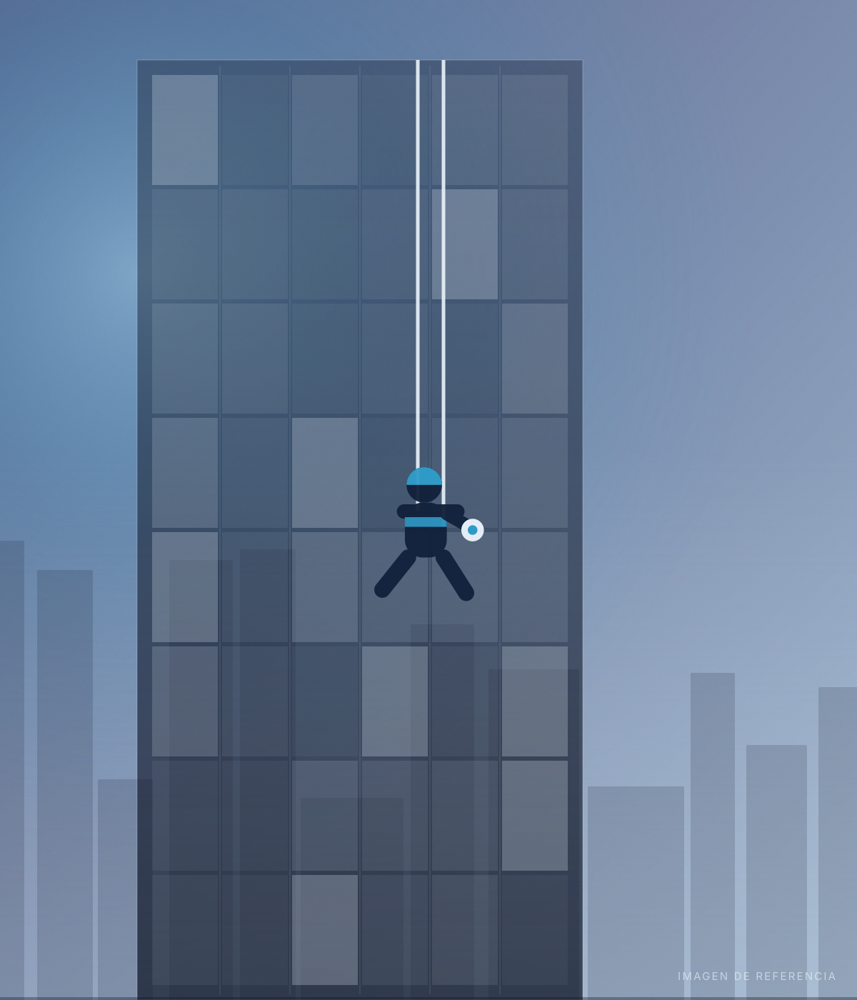
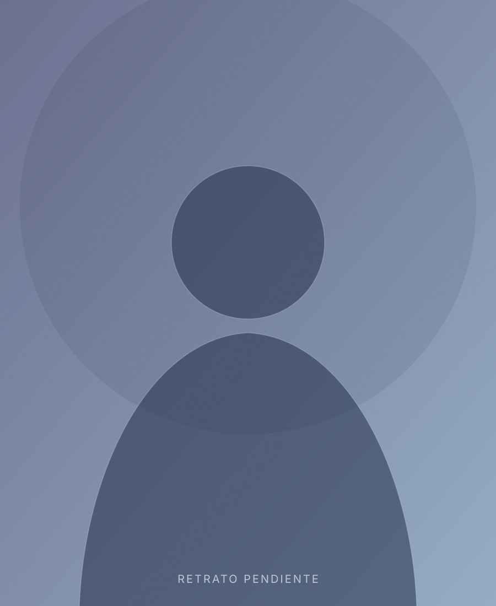
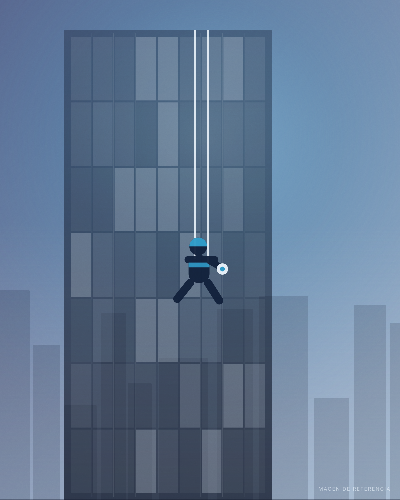

Gestión de proyectos · Trabajos en altura
Mantenimiento vertical con estándar de ingeniería
Soluciones de altura y difícil acceso con acceso por cuerdas: fachada, cristal, membrana arquitectónica y estructura. Rapidez y profesionalismo, sin comprometer la calidad ni detener la operación del inmueble.
- 8Especialidades
- 18Ubicaciones
- 9Estados
Trabajos verticales
Alturas y difícil acceso
Acceso por cuerdasSin andamios
- Guadalajara
- Puerto Vallarta
- Riviera Nayarit
- Ciudad de México
- Monterrey
- Cancún

Sobre nosotros
Nos adaptamos a cada cliente
Trabajamos con acceso por cuerdas —trabajos verticales— porque es la forma más rápida y menos invasiva de llegar a donde el inmueble lo necesita: fachadas, domos, membranas y estructuras de difícil acceso, sin andamios y sin detener la operación.

Mensaje de nuestro fundador
Fundador y Director General
ASAP Gestión de Proyectos 369
Servicios principales
Ocho especialidades, un solo responsable de obra
Fachada, cristal, membrana arquitectónica y estructura, con acceso por cuerdas en cualquier punto del inmueble. Toca un servicio para ver el alcance.
Trabajos verticales
Llegamos donde el andamio no llega
El acceso por cuerdas es nuestra especialidad y el eje de toda la operación: dos líneas independientes, anclajes calculados y un plan de rescate para cada maniobra.

Por qué el método vertical cambia el proyecto
Técnica y equipo
Seguridad, sin concesiones
Dónde hemos trabajado
Nueve estados,
Nueve estados,
un mismo estándar
Del Pacífico al Caribe. Elige un estado o una ciudad y el mapa te lleva ahí, con su estado señalado. Guadalajara es nuestra base de operaciones.
Vista nacional
Ubicación
Base operativa
Nuestros proyectos
Obra entregada del Pacífico al Caribe
Estas son las ciudades y destinos donde hemos trabajado. Filtra por estado y toca cualquiera para verla señalada en el mapa.
Estado
0 ubicaciones
No hay ubicaciones con ese filtro.
Proveedores y con quienes hemos trabajado
Cómo trabajamos
Del levantamiento a la carta garantía
01
05
En números
Lo que sostiene nuestra palabra
¿Listo para subir?
Diagnóstico de fachada sin costo en tu ciudad
Agenda una visita técnica: levantamos superficies, identificamos patologías y entregamos propuesta por partida en menos de 72 horas.
Agendar visita técnica
Contacto
Hablemos de tu edificio
Cuéntanos qué necesitas y en qué ciudad. Respondemos el mismo día hábil.
Teléfonos
Correoaserrano@asapgp.com.mx
Base operativaGuadalajara, Jalisco, México
CoberturaJalisco · Nayarit · Colima · Sinaloa · Michoacán · Querétaro · Ciudad de México · Nuevo León · Quintana Roo